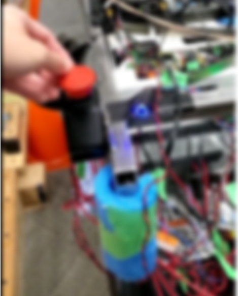

WORK PROJECT / EMBEDDED & CONTROLS
Power management firmware
PLC firmware coordinating power, communication, and fault recovery in an autonomous mobility platform.
Project context
The mobility platform needed coordinated power distribution and communication across interconnected devices. I designed and developed its main PLC firmware with fault detection and recovery behavior.
My contributions
- Implemented power management for connected devices.
- Integrated CAN, I²C, and proprietary communication protocols for components and sensors.
- Handled overcurrent protection and precharge circuit loads.
- Used software abstraction and polymorphism to support firmware variations.

